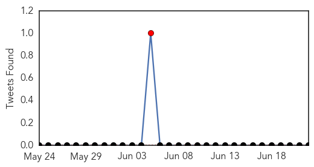

Yellow Fever
30-Day Web Trend
1 alerts, 0 warnings

30-Day Twitter Trend
0 alerts, 0 warnings

Article Locations


Article Confidences

Top Articles:
- 0.999
- UPDATE – Thai Muslims traveling to Hajj to be screened for MERS
- 0.999
- Thai Muslims traveling to Hajj to be screened for MERS
- 0.998
- Thai Muslims traveling to Hajj to be screened for MERS
- 0.998
- Thai Muslims traveling to Hajj to be screened for MERS
- 0.970
- Thailand to implement health checks for haj pilgrims
- 0.962
- Thailand Imposes Strict Health Measures For Muslim Hajj Pilgrims To Cease (Mers)
- 0.953
- MERS: Thailand Rolls Out Precautionary Measures For Hajj Pilgrims
- 0.948
- Haj pilgrimage spurs new MERS outbreak fear in Thailand
Top Tweets:
-
No tweets found for Jun 22, 2015
Measles
30-Day Web Trend
0 alerts, 0 warnings

30-Day Twitter Trend
1 alerts, 0 warnings

Article Locations

Article Confidences

Top Articles:
- 0.974
- Sudan facing measles outbreak with 2,500 cases nationwide: UN
- 0.966
- Sudan Cases Are 4 Times Higher Than Last Year Despite Vaccination Campaign
- 0.963
- Sudan facing measles outbreak with 2,500 cases nationwide: UN
- 0.887
- Child gets measles visiting Martha's Vineyard; second case in state
- 0.842
- Child on Martha's Vineyard Diagnosed With Measles
- 0.586
- Measles on Martha's Vineyard: Hospital releases list of places contagious child visitied
- 0.553
- Central African Republic
Top Tweets:
-
No tweets found for Jun 22, 2015